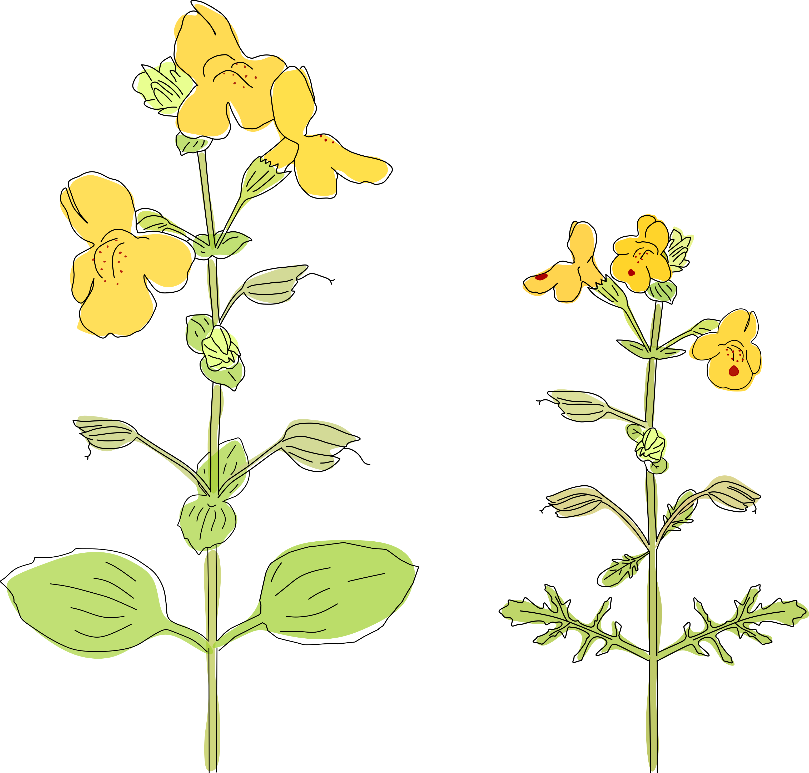
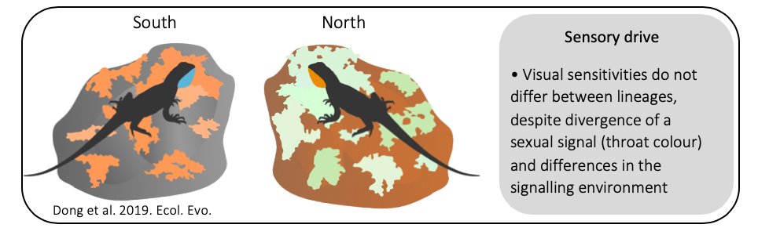
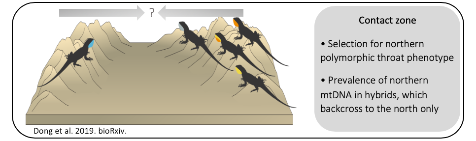
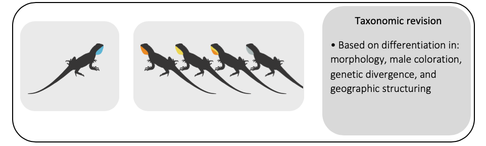

Local adaptation and reproductive isolation in yellow monkeyflowers
In collaboration with: Kathleen Ferris (Tulane University).
My research focuses on the genetic and phenotypic basis of adaptation using yellow monkeyflowers: Mimulus guttatus (below, left) and M. laciniatus (below, right). The two species are locally adapted to contrasting microhabitats. Mimulus guttatus occurs in moist seeps and meadows whereas M. laciniatus grow on granite outcrops which are characterized by shallow rocky soil, high light intensity and temperatures, and low soil water retention. Mimulus laciniatus has adapted to the harsh granite outcrops by evolving highly lobed leaves, a self-fertilizing mating system, and early flowering.
Ongoing projects:
- Long-term field study to examine selection on traits involved in adaptation.
- Pool-Seq to compare allele frequencies before and after an episode of selection. 
- QTL mapping to examine influence of gene flow on the genetic architecture of UV phenotype.
- Pollinator fidelity in sympatric and allopatric habitats.
- Field reciprocal transplant to test for local adaptation.
Ultraviolet floral coloration in monkeyflowers
Mimulus guttatus and M. laciniatus both have yellow flowers with variable red spotting and ultraviolet patterning (UV; 300–400 nm wavelengths). There are at least two UV morphs present in both (runway and bullseye) which function in pollinator discrimination. There is also emerging evidence in other plant systems that UV coloration may be influenced by abiotic factors and contribute to local adaptation.
Ongoing projects:
Evolutionary consequences of speciation and hybridization in Australian dragon lizards
The swift dragon (Ctenophorus modestus) and tawny dragon (C. decresii) , previously the northern and southern lineages of C. decresii sensu lato respectively, are endemic to South Australia. The two species differ notably in throat coloration (i.e. sexual signal). The polymorphic C. modestus has four distinct throat color morphs (orange, yellow, yellow with an orange center, and grey), whereas the monomorphic C. decresii has ultraviolet-blue throats. There is a natural hybrid zone between the species in the Barossa Valley.
Sensory drive and visual sensitivities
I assessed the colour vision of the two lineages for differences in visual sensitivity associated with the divergence of a sexual signal and the signalling environment (Dong et al. 2019, Ecology and Evolution). I investigated whether lineages differ in visual sensitivity to UV wavelengths by measuring retinal opsin protein expression of four cone opsin genes (SWS1, SWS2, RH2, LWS) using droplet digital PCR.
Genomic and phenotypic clines across a contact zone
During secondary contact between groups that differ in morph frequency/number, there is expected to be a high probability of genetic incompatibility. Using extensive field surveys, male phenotype data, genomic single nucleotide polymorphisms (SNPs), and a mitochondrial (mtDNA) marker, I investigated the outcome of secondary contact between C. modestus (polymorphic) and C. decresii (monomorphic). Furthermore, I captive-bred pure and F1 hybrid offspring in order to compare F1 phenotype to advanced generation hybrids found in the field (Dong et al., bioRxiv).
F1 hybrid fitness
The viability and fitness of F1 hybrids have consequences for contact zone dynamics, and ultimately whether species boundaries are eroded or maintained. To investigate the viability and fitness of F1 hybrids, I performed pure and reciprocal cross F1 hybrids in a laboratory setting and measured parental reproductive traits and offspring fitness traits (e.g. survival, growth rate, bite force, sprint speed).

Taxonomic revision
I formally separated the lineages of C. decresiiC. modestus (swift dragon; Ahl, 1926) and the southern lineage as C. decresii sensu stricto (tawny dragon; Duméril & Bibron, 1837). The addition of this species to the C. decresii species group, which now comprises six species, supports the notion that geographic divergence in male coloration is an important component to speciation in this group.
In collaboration with: Devi Stuart-Fox (University of Melbourne), Adnan Moussalli (Museums Victoria), Claire McLean (Museums Victoria), Greg Johnston (Flinders University), Katrina Rankin (University of Melbourne), and Adam Elliott.